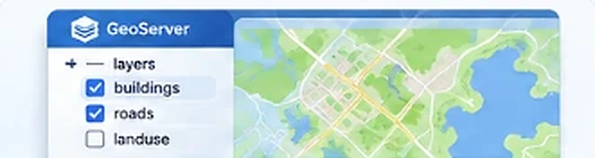
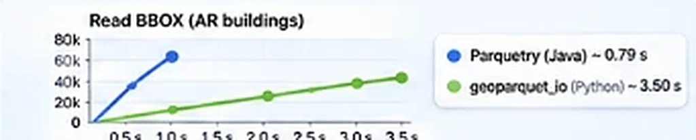

Portolan SDKs
PortolanAPIs for working with directory-based geospatial catalogs and datasets.
Open-source tools, libraries, and experiments for spatial data, maps, and interoperability.
APIs for working with directory-based geospatial catalogs and datasets.

Connect GeoServer with Portolan catalogs and geospatial datasets.

Benchmarking and examples for GeoParquet readers and spatial queries.
Shared behavioral contracts and conformance tests for Portolan SDKs.
No projects found in this category.
geoverse.dev is an open-source hub for geospatial software, bringing together tools, libraries, and experimental projects focused on maps, spatial data, and interoperability. Built in the open. Open to collaboration.
github.com/geoverse-dev ↗